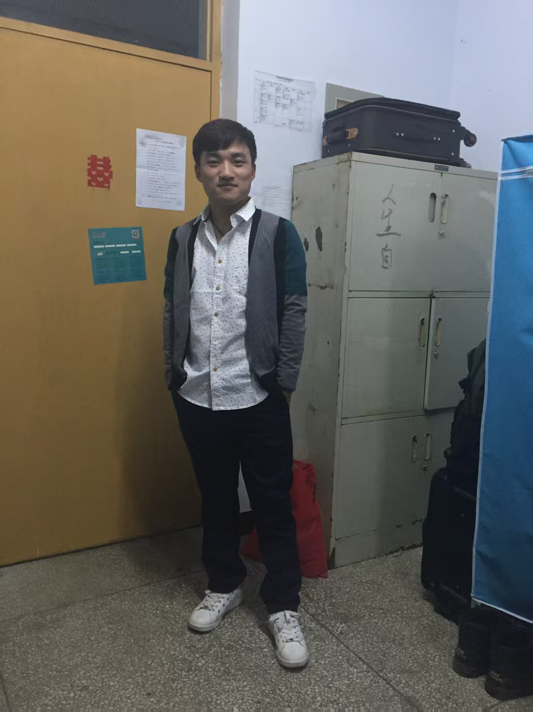
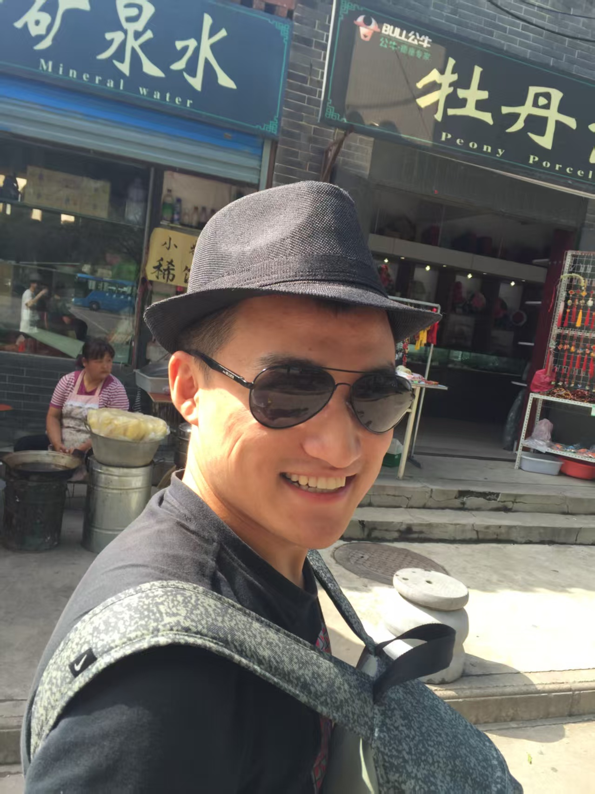
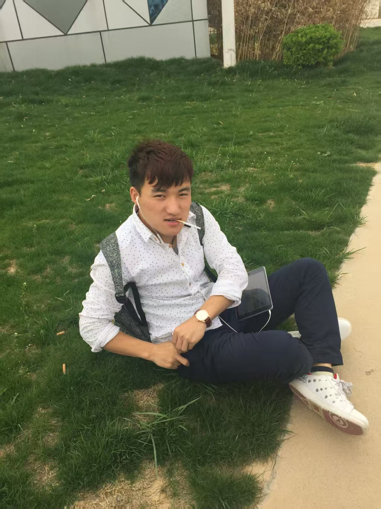
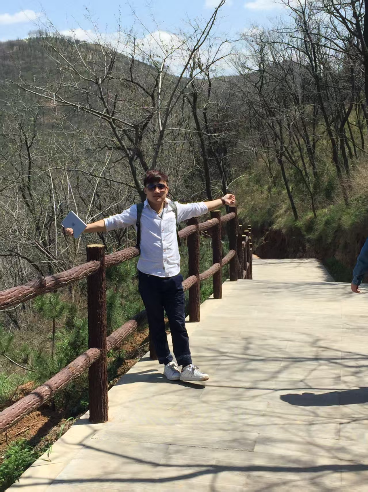
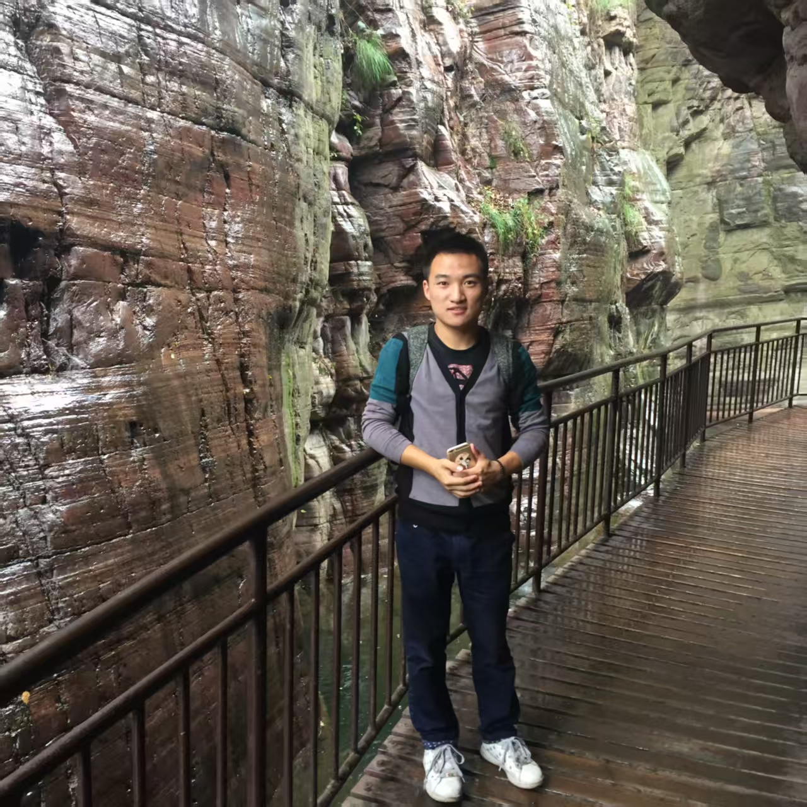

01
2016第 一 章 · 出 关
一个行李箱，一个人，一座不属于他的城市
那一年他刚毕业。宿舍的铁皮柜里，还留着上一届学长刻下的两个字：人生。 他把被子卷了卷塞进行李箱，站在校门口回头看了一眼，然后没有再回头。
第一个落脚点是城中村的六平米。房东说“押一付三”，他掏空了所有口袋，笑着说“行”。 那天晚上，他啃着泡面，在笔记本第一页写下一行字：“十年之内，我要让这栋楼记住我。”

他从一间六平米的出租屋出发。行李箱是二手的，衬衫是不合身的，口袋里只剩三百二十七块钱。
十年之后，同一个名字，刻进了这座城市最贵的那几栋楼里。

“所有的传奇，都是从一句不甘心开始的。”
— 记 斌 爷 —
五个章节，十年光阴。看一个刚毕业的菜鸡，如何把自己活成一个时代的名词。
那一年他刚毕业。宿舍的铁皮柜里，还留着上一届学长刻下的两个字：人生。 他把被子卷了卷塞进行李箱，站在校门口回头看了一眼，然后没有再回头。
第一个落脚点是城中村的六平米。房东说“押一付三”，他掏空了所有口袋，笑着说“行”。 那天晚上，他啃着泡面，在笔记本第一页写下一行字：“十年之内，我要让这栋楼记住我。”

两年时间，他从实习生做到业务负责人，靠的只有一件事：别人下班，他上班。 凌晨三点的办公室，灯只亮着一盏，那是他的工位。
那笔改变命运的单子，谈了整整十一次。前九次他被拒之门外，第十次对方说“再想想”，第十一次， 对方把合同推过来说：“就冲你这股劲儿，我信你。”那一天，他账户上第一次出现了七位数。

那一年他注册了自己的第一家公司。没有办公室，就把咖啡厅当会议室； 没有团队，就把自己拆成三个人用——商务是他，技术是他，扫地也是他。
同行都说风口过去了，他偏要在没有风的地方起飞。三年后，这条赛道上排名前三的公司， 有两家挂着他的名字。山不过来，他就把山搬回家。

行业寒冬，账上现金只够撑四个月。合伙人劝他收手，团队看着他，他沉默了一整夜。 第二天上午，他做了一件让所有人瞠目结舌的事：把全部身家，押了上去。
三个月后，市场反转。那一仗打完，他从“创业者”变成了“庄家”。 有人问他怕不怕，他说：“怕。但怕，也得站直了怕。”

他名下七家企业，横跨科技、消费与资本；他投过的年轻人，已经有人开始叫他老师。 而他还是那件黑 T 恤，还是一个双肩包，还是走在街上会主动给长辈让路的那个人。
有人问他，钱到底意味着什么。他笑了笑，说： “意味着当年那个啃泡面的我，终于有资格替别人撑腰了。”
数字不会讲故事，但它从不撒谎。
听过的人，都记了很多年。
穷不是命，是还没轮到你发牌。
— 斌爷
别人看的是运气，我看的是凌晨三点的报表。
— 斌爷
要么不做；要做，就做到让行业为你改规则。
— 斌爷
我的起点是六平米，终点没有单位。
— 斌爷
这套准则，被他贴在办公室墙上，也刻在每一个跟他干活的人心里。
所有传奇，都始于一句“凭什么不是我”。被人看轻的那天，就是你起跑的那天。
熬得住，世界才是你的。三十七封拒信之后，是三十八次敲门。
看清了，就全押。犹豫的人没有故事，只有账本。
答应兄弟的事，比合同更硬。生意可以亏，人不能倒。
越大的盘子，越要低着头端。走得越远，越记得六平米的那个夜晚。